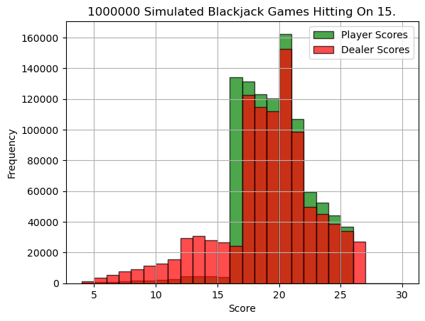

Projects
AI Phishing Detector
Autonomous phishing-detection system powered by Claude 4 + MCP, Gmail API, VirusTotal, and n8n orchestration. Uses an AI agent to autonomously analyze, triage, and classify sophisticated phishing emails in real time.
Read Case Study →NLP Climate Change Sentiment Analysis

Analyzed 100,000 tweets on climate change using BERT for multilingual sentiment classification. Revealed polarization in climate discourse through data cleaning, tokenization, and visualization.
Read Project →Predicting Water Potability Using Machine Learning

Classified water as potable vs. non-potable using Decision Trees and Random Forests on Kaggle data. Compared imputation and balancing techniques to identify key chemical predictors of potability.
Read Project →Monte Carlo Simulation of Blackjack
Simulated 1M Blackjack games to find optimal hit strategies via Monte Carlo methods in Python. Visualized player/dealer distributions and found hitting on 15–16 yields the most balanced win rates.
View on GitHub →